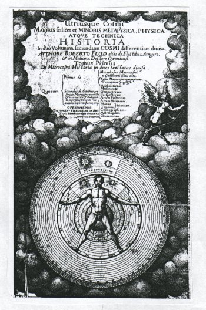
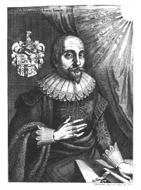

Inhoudsopgave
Besluit (1) Inhoudsopgave
Besluit (1)  Tegen Johannes
Kepler Tegen Johannes
Kepler
Robert Fludd (1574-1637)
In Robert Fludd’s
Utriusque cosmi ... historia(1)
is de musica mundana niet zozeer een werkelijk klinkende muziek, maar
veeleer een methode om de oorsprong en de structuur van de wereld te proberen
te begrijpen. Een probeersel waarvoor hij, zoals zal blijken, zeer veel kritiek
van tijdgenoten en collega weten- schappers heeft gekregen. Want de wijze
waarop Robert Fludd zijn kennis probeerde te verkrijgen werd gedurende zijn
leven al in twijfel gesteld, een twijfel die na Fludd’s dood en na
bijvoorbeeld Francis Bacon’s Novum organon (1620), René
Descartes’ Discours de la méthode (1637), en uiteindelijk
de werken van Isaac Newton, in totale verwerping omsloeg. En hoewel Fludd’s mystieke wereld, vol analogieën en
correspondenties, correspon- denties die de mens in Fludd’s ogen
misschien zou kunnen leren kennen en beheersen om daarmee de wereld te
beheersen, nog in talloze werken terugkeert, waaronder bijvoorbeeld in
Athanasius Kircher’s Musurgia universalis, toch werd die oude
wereld gedwongen te verdwijnen ten voordele van een wereld die men met meer
onmiddellijk succes zijn wil op kon leggen. |
|
afb. 4 Titelpagina Utriusque cosmi ...
historia |
* The alchemy web site and virtual
library (waarop een groot aantal van Fludd’s werken, bijvoorbeeld: *
Summum bonum * Philosophia Moysaica *
Philosophia sacra -
Meteorologia cosmica * Tractatus theologo
philosophicus * Utriusque
cosmi historia * Anatomiae amphitheatrum
en * Integrum morborum
mysterium ).
I
In 1592 vertrok de 18-jarige Robert Fludd uit het ouderlijk
huis, ‘Milgate House’, gelegen in de parochie Bearsted in de
provincie Kent (Engeland), om aan St. John’s College in Oxford te gaan
studeren.(2) Tijdens zijn studie(3) ontwikkelde hij een grote interesse in
de geneeskunde, mogelijkerwijs omdat St. John’s toendertijd een van de
weinige Engelse Colleges was waar de geneeskunde onderwezen werd. Maar behalve
in de reguliere geneeskunst, ontstond hier ook zijn interesse in zaken die niet
op het schoolprogramma stonden, zoals bijvoorbeeld kabbala, hermetisme,
alchemie, de leer van Paracelsus, en astrologie(4).
In 1596 behaalde Fludd zijn B.A. graad
(Baccalaureus Artium) en in 1598 zijn M.A. graad (Magister
Artium), een feit dat naast zijn voorliefde voor de geneeskunde opmerkelijk
genoemd mag worden: de meeste leeftijdgenoten van edele komaf(5) studeerden slechts korte tijd, meestal
rechten, en vertrokken veelal zonder graad.
Na behalen van zijn graden
verliet Fludd Oxford, om gedurende de volgende zes jaren door Europa te reizen.
Deze reis brengt hem naar Frankrijk, Spanje, Italië en Duitsland en
gedurende deze reis is hij constant op zoek naar mensen, boeken en bibliotheken
die zijn kennis omtrent het occulte konden verbreden.
Bij zijn terugkeer in Engeland
in 1604 schreef hij zich in aan Christ Church College (eveneens te Oxford),
ditmaal om zijn graad in de medicijnen te behalen. In 1605 worden hem de graden
M.B. (Medicinae Baccalaureus) en M.D. (Medicinae Doctor)
toegekend, waarna hij naar Londen vertrok om zich als arts te vestigen; een
positie die hij tot zijn dood in 1637 hield.
Eenmaal gevestigd arts werd hij in 1609 Fellow van het College of
Physicians te Londen. Na verloop van tijd nam hij een vooraanstaande
positie in, zo was hij bijvoorbeeld viermaal censor voor dit College (1618,
1627, 1633, en 1634). Een met Robert Fludd bevriend lid van dit College was
William Harvey (1578-1657), de ontdekker van de bloedsomloop (De motu cordis
et sanguinis. 1628), waarmeee Harvey in feite de vader van de moderne
geneeskunde werd. Als arts was Fludd, zowel bij zijn collega’s als bij
zijn patiënten, een gerespecteerd figuur.(6)
Fludd heeft naast een drietal grote werken, te weten het werk dat hier
onderwerp is (Utriusque cosmi ... historia. 1617-1621), een werk over de
geneeskunde (Medicina Catholica. 1629-1631), en een weergave van zijn
filosofie (Philosophia Moysaica. Posthuum, 1638), een groot aantal
kortere geschriften van veelal polemische aard nagelaten (zie volgend deel).
| |  Robert Fludd Linksboven: ‘‘In lumine tuo
Videbimus lumenÂÂ - Ps. 36:10
Rechtsboven: ‘‘Si
tu illustres lucernam meam, Jehova Deus, Splendentes efficies tenebras
measÂÂ - Ps. 18:29 |
II
Robert Fludd was in zijn tijd geenszins een obscuur persoon
die er allerlei duistere praktijken op nahield, een odium dat hem vanaf de
tweede helft van de 17de eeuw aankleefde en waardoor zowel zijn persoon als
zijn werk in vergetelheid raakten(7)
Integendeel, gedurende zijn leven was hij een bekend en alom gewaardeerde
figuur, zowel als medicus, alswel als wetenschapper.
Fludd’s status als wetenschapper moge blijken uit het feit dat behalve de
minder bekende, ook de grote wetenschappers van zijn tijd als Johannes Kepler,
Marin Mersenne, en Pierre Gassendi zich grote moeite hebben getroost om
Fludd’s opvattingen te weerleggen: blijkbaar waren deze van een zodanige
aard dat zij er niet zomaar aan voorbij konden gaan.
Zodoende brak er gedurende de eerste helft van de 17de eeuw een tweetal heftige
polemieken uit, namelijk Kepler versus Fludd en Mersenne versus Fludd (Mersenne
zou later zijn vriend Gassendi te hulp roepen). Er is een aanzienlijke
hoeveelheid literatuur over deze polemieken.(8) In het algemeen worden zij geplaatst in het licht van de
overgang van de '‘oude’ wetenschap (Platonisme/Aristotelisme, en,
specifiek voor renaissance en begin 17de eeuw, de bijbel en het
‘occultisme’ als bron van kennis voor de natuurlijke wereld,
anderszins ook ‘kwalitatieve’ wetenschap genoemd(9)) naar de ‘nieuwe’
wetenschap (gebaseerd op kwantiteit, ook ‘mechanistisch’ genoemd(10)), waarbij Mersenne en Kepler als
representanten van het ‘nieuwe’ tegenover Fludd als representant
van het ‘oude’ gelden.
1. Robert
Fludd, Utriusque cosmi ... historia. Oppenheim, Johann Theodore de Bry,
1617-1621. (terug naar tekst)
2. Voor dit korte overzicht heb ik met name gebruik gemaakt
van: William H. Huffman, Robert Fludd and the End of the Renaissance.
London/New York, Routledge, 1988. Maar zie ook: Andrew Ashbee, ‘Fludd,
Robert’ NG 6. p. 663; Friedrich Blume, ‘Fludd’
MGG 4. kols. 438-442; Joscelyn Godwin, Robert Fludd. Hermetic
Philosopher and Surveyor of Two Worlds. London, Thames and Hudson Ltd,
1979.; Serge Hutin, Robert Fludd (1574-1637) Alchemiste et Philosophe
Rosecrucien. Paris, Omnium Litteraire, 1971. Opvallend is dat zowel Blume,
Ashbee als Hutin (maar ook Allen G. Debus, Robert Fludd and his
Philosophicall Key. New York, Science History Pub., 1979. p. 1) als
intree-datum van Fludd in Oxford 1591 noemen, en niet 1592; Huffman (die 1592
noemt) wijst met nadruk op het ‘Register of the University of
Oxford’ (zie Huffman, op. cit. p. 181, noot 25); de precieze datum
zou dus vrij eenvoudig vast te stellen moeten zijn. Evenzo zijn er grote
verschillen tussen genoemde auteurs wat betreft de data waarop Fludd zijn
graden behaald zou hebben. Ik heb in deze Huffman gevolgd, wederom vanwege
diens aanzienlijke hoeveelheid bewijsmateriaal. (terug naar
tekst)
3. Fludd begon in de ‘Arts faculty’, hetgeen
lessen in logica, rethorica, Grieks e.d. zal hebben ingehouden. Zie William H.
Huffman, Renaissance. p. 9 e.v. (terug naar
tekst)
4. Ook hier zijn er verschillen in de literatuur: Allen G.
Debus (Philosophicall Key. p. 2, maar zie ook diens andere publicaties)
merkt over het ontstaan van Fludd’s interesses in het
‘occulte’ op dat zij gedurende Fludd’s reizen op het Europese
vasteland ontstonden, terwijl Huffman nadrukkelijk Fludd’s tijd in Oxford
aanwijst. Voor dit laatste zijn wel bepaalde bewijzen; er bestaat namelijk het
verhaal van Fludd zelf dat hij, om een diefstal die tijdens zijn studententijd
in Oxford plaatsvond op te lossen, gebruik maakte van mea astrologia (en
daar succesvol mee was); gedurende zijn studietijd was hij dus al met
astrologie bekend, en vandaaruit mogelijkerwijs ook met de andere
‘occulte’ wetenschappen. Zie Renaissance. p. 13. Voor een
woordelijke weergave van Fludd’s verhaal zie Joscelyn Godwin,
Hermetic. p. 6. Zie over de invloeden van hermetisme, kabbala, etc. op
Fludd met name Frances A. Yates, Giordano Bruno and the Hermetic
Tradition. London, Routledge and Keegan Paul, 1964. p. 403-407 en 432 e.v.
(terug naar tekst)
5. Fludd’s vader was Sir Thomas Fludd die zijn
knighthood van koningin Elizabeth ontving vanwege zijn diensten als
betaalmeester van de Engelse troepen in Frankrijk en de Nederlanden. Robert
Fludd was bijzonder trots op zijn afkomst en geërfde titel, zo vindt men
deze nog vóór de vermelding van ‘dokter’ op (bijv.)
de titel pagina van Utriusque cosmi ... historia (zie de afbeelding
boven); alwaar men het volgende kan lezen: Robertus Flud, alias de
Fluctibus, Armiger [Engels: Esquire] et in Medicina Doctore
Oxoniensi. Zie hierover verder William H. Huffman, Renaissance. p. 4
e.v. (terug naar tekst)
6. Zie hierover verder William H. Huffman,
Renaissance. p. 18 e.v. en p. 49. Maar zie ook Allen G. Debus, The
Chemical Philosophy. New York, Science History Pub., 1977. I. p. 208.
Overigens, Huffman voert ook bewijzen aan dat hoewel Fludd zichzelf als
‘Hermetic Paracelsian’ afficheerde, hij toch in praktische
uitoefening van de geneeskunst in feite veel sterker op de traditionele
geneeskunst leunde; met andere woorden, hoewel Fludd het ‘occulte’
(alchemie, hermetisme, de leer van Paracelcus e.d.) zeer waardevol achtte om de
‘mysteriën van de natuur’ (zoals deze in de 17de eeuw beleefd
werden) te doorgronden, hij toch de traditionele Galenische en Hippokratische
remedies bruikbaarder vond (zie William H. Huffman, Renaissance. p.
19-20). Allen G. Debus (Philosophicall Key. p. 2, maar het citaat is
ook, in een iets uitgebreidere vorm, te vinden in Chemical. p. 249-250)
citeert een anoniem werk met dezelfde strekking: ‘In an anonymus tract
published nearly twenty years after his death it is noted that altough Fludd
was a ‘‘Trismegistan-Platonick-Rosy-crucian doctor, [he] gave his
Patients the same kind of Galenical Medicaments, which other Physitians
in the Town ordinarily appointed, and when he himself was sick, he had no
Chymical Elixirs or Quintessential Extracts to rely upon
[...]’’.’ Debus merkt verder op dat Fludd’s mysticisme
vermoedelijk slechts fungeerde om bij de patiënten vertrouwen te wekken,
waarmee Fludd een groot psychologisch inzicht vertoont: als de patiënt
vertrouwen heeft, zal hij eerder genezen (Joscelyn Godwin, Hermetic. p.
8 is dezelfde mening toegedaan). (terug naar
tekst)
7. Aan deze verschuiving in de waardering voor Fludd (de
val in totale vergetelheid vanaf de tweede helft van de 17de eeuw en de
herontdekking van Fludd als niet te verwaarlozen factor voor ons begrip van de
17de eeuw in onze eeuw) wijdt Huffman een hoofdstuk, zie Renaissance. p.
167-179. En hiermee samenhangend, zie voor een bijzonder interessant en
omvangrijk historiografisch essay over de relatie ‘magie’ (en wat
daarmee samenhangt) en 17de eeuwse wetenschap; dus een beschrijving van de
ontwikkeling in de 20ste eeuw van het denken over en weergeven van die 17de
eeuwse wetenschap door diverse geleeerden (besproken worden bijv. Frances A.
Yates, Daniel P. Walker, Lynn Thorndyke): Brian Vickers,
‘Introduction’ in: Brian Vickers (ed.), Occult and scientific
mentalities in the Renaissance. Cambridge, Cambridge U.P., 1984. p. 1-55
(terug naar tekst)
8. Zie bijvoorbeeld Peter J. Ammann, ‘The musical
theory and philosophy of Robert Fludd’ Journal of the Warburg and
Courtauld Institutes 30 (1967): p. 198-227 (over de controverses Fludd -
Kepler/Mersenne p. 210-219 en p. 223-227); William H. Huffman,
Renaissance. p. 50-71: hierin worden niet alleen de posities van Fludd
etc. besproken, maar ook standpunten uit de literatuur over de controverses;
bovendien geeft Huffman een bibliografie. Hiervan dienen speciaal vermeld te
worden: Allen G. Debus, The Chemical Philosophy. I. p. 253-290 (Debus
bespreekt ook de andere polemieken, met minder beroemde personen dan Kepler en
Mersenne); Wolfgang Pauli, ‘The influence of archetypal ideas on the
scientific theories of Kepler’ in: C.G. Jung en W. Pauli, The
Interpretation of Nature and the Psyche. London, Routledge and Keegan Paul,
1955. p. 149-240; Robert S. Westman, ‘Nature, art and psyche: Jung,
Pauli, and the Kepler-Fludd polemic’ in: Brian Vickers (ed.), Occult
and scientific mentalities in the Renaissance. Cambridge, Cambridge U.P.,
1984. p. 177-229 (in dezelfde band nog een aantal interessante essays); Frances
A. Yates, Giordano Bruno and the Hermetic Tradition. p. 432-455
(Hoofdstuk XXII - ‘Hermes Trismegistus and the Fludd
Controversies’). Door Huffman niet genoemd is: Michael Fend,
‘Seventeenth century criticisms of the use of analogy and symbolism in
music theory’ Miscellanea Musicologica: Adelaide Studies in
Musicology 17 (1990): p. 59-64, met ook hierin een bibliografie, waaruit
genoemd dient te worden: Ernst Cassirer, Das Erkenntnisproblem in der
Philosophie und Wissenschaft der neueren Zeit. Hildesheim, Georg Olms
Verlag, 1974. (eerste druk 1922). p. 328 e.v. Hiernaast is nog interessant:
Horst Atteln, Das Verhältnis Musik-Mathematik bei Johannes Kepler.
Erlangen, 1970. p. 98-119 (terug naar tekst)
9. Voor een inzicht in de 17de eeuwse wetenschap, zie
bijvoorbeeld Allen G. Debus, Chemical. (Vol. I); E.J. Dijksterhuis,
De Mechanisering van het Wereldbeeld. Amsterdam, Meulenhof, 1950. Of
Lynn Thorndyke, History of Magic and Experimental Science. Vol. VII. New
York/London, Columbia U.P., 1958. (terug naar
tekst)
10. E.J. Dijksterhuis, De Mechanisering van het
Wereldbeeld. p. 1. Deze toenemende mechanisering ligt kort gezegd in de
verschuiving van een verklaring van de realiteit van het ‘waarom’
naar het ‘hoe’: ‘Galileo had set aside explanation in terms
of the ultimate why of physical events in favour of explanation in terms
of their immediate how, i.e., a mathematical formula expressing
their processes and motions.’ (uit: E.A. Burtt, The Metaphysical
Foundations of Modern Physical Science. London, Routledge and Keegan Paul,
1950. p. 221). Het ‘waarom’ (waarin allerlei theologische - en
daaruit teleologische -theorieën hun plaats vinden) verandert in een
mathematisch ‘hoe’. Dijksterhuis: ‘De mechanisering, die het
wereldbeeld bij den overgang van antieke naar klassieke natuurwetenschap heeft
ondergaan, heeft bestaan in de invoering van een natuurbeschrijving met behulp
van de mathematische begrippen der klassieke mechanica; zij duidt het begin van
de mathematisering van de natuurwetenschap, die in de physica der twintigste
eeuw haar voltooing krijgt.’ (p. 550). Wel dient hierbij de kanttekening
te worden gemaakt dat mathematische formulering alleen niet tot het
grote succes van de natuurwetenschappen heeft geleid, maar dat het succes
vooral uit de combinate met de proefneming, de ervaring, voortkwam. Zie
Carlos Steel, Historische Inleiding tot de Wijsbegeerte. Leuven,
Universitaire Pers Leuven, 1989. p. 69 e.v. (terug naar
tekst)
|